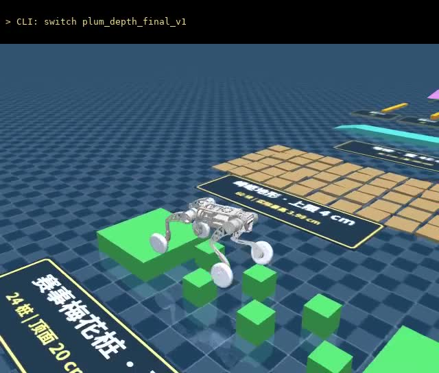
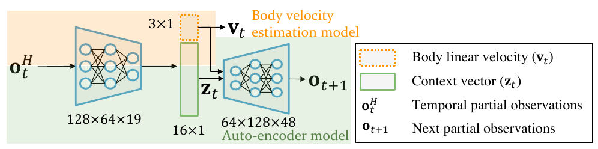
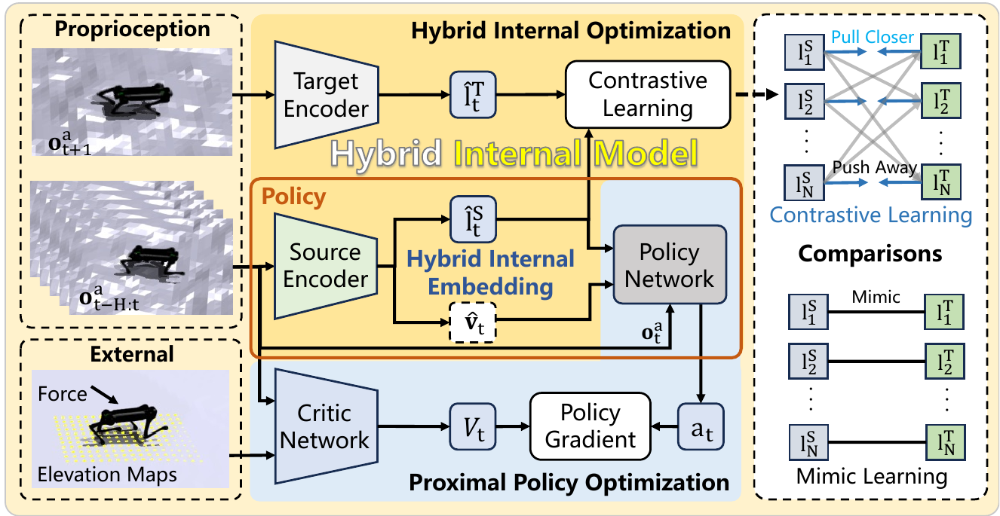
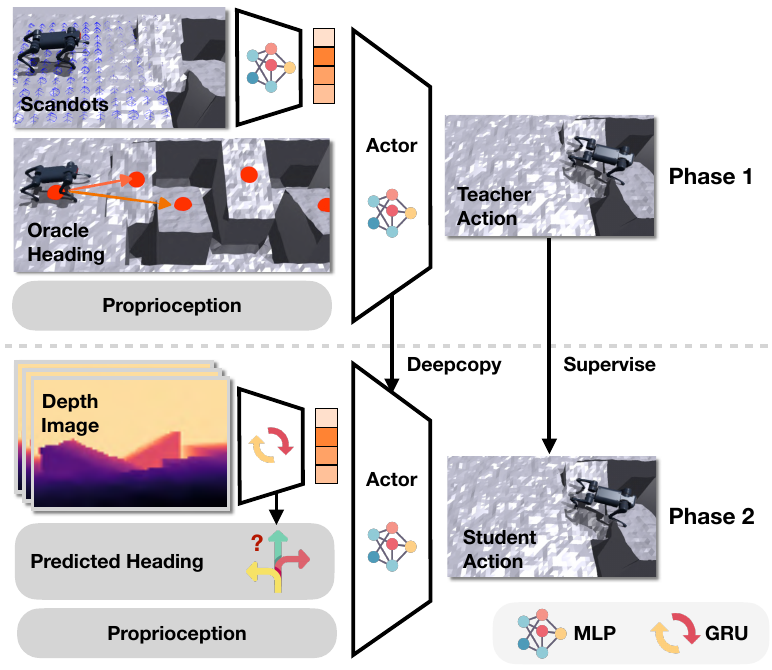
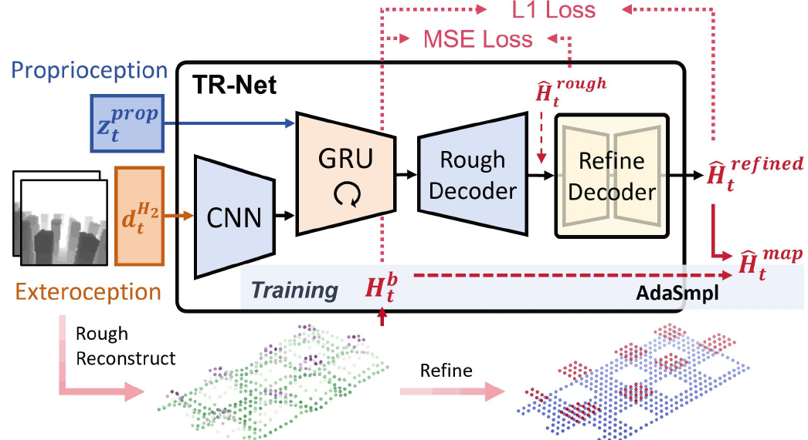
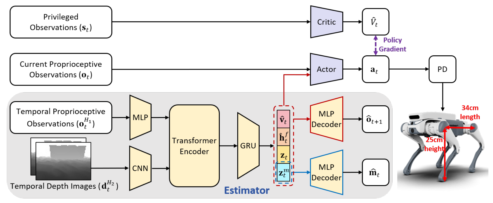
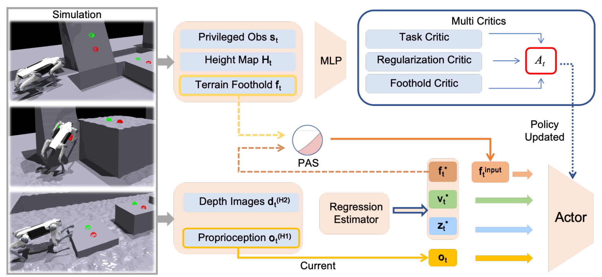

单帧本体观测有歧义。用历史 + 训练信号补出“接触上下文”。
对应：平地策略、RecoveryLoco 式鲁棒性
逐帧速度跟踪会惩罚必要的减速与抬头。换成任务方向奖励 + 难度课程。
对应：通用越障专家、40 cm 高台
杀手不是障碍，是交接瞬间的动量与姿态。外环导航 + 有界指令 + 热切换。
对应：Part 1 路线、Part 2 33 段
直接重建脚下扫描，还是直接喂深度？我们两代都做了。
对应：梅花桩 v1 → v2
同一句“学了隐变量”，三篇论文的监督信号完全不同——这才是读论文该记下来的东西。

CENet 从历史输出 v̂ 与 z。解码器要求 (v̂, z) 重建下一帧本体观测，KL 正则隐空间——预测未来＝保留对接触敏感的信息。

两个编码器分别看历史与后继状态，与可学习 prototype 比相似度，用 Sinkhorn 做批次平衡分配后互相预测。
本仓移植了这一支：32 个 prototype、速度 MSE、估计器与 PPO 分账更新。
落到主力策略上我们只留了共同骨架：六帧本体历史 342 维 + 特权 Critic。隐变量换成了哪门子监督，取决于任务缺什么。
| 命令维度 | 范围 | 采样技巧 |
|---|---|---|
| vx | −0.4 … 1.0 m/s | 5 s 重采样，10% 站立 |
| ωz | ±0.65 rad/s | 非站立中 50% 纯偏航 |
| 低速盒 | |vx|≤0.12 |ωz|≤0.20 | 混合样本中再抽 50% |
均匀采样时，0.1 rad/s 的小修正只值很少的奖励，策略不转也不亏。把低速盒写进采样器，等于把课程放进数据分布。
0.08。每一项惩罚都在告诉策略哪条路最省力。设计惩罚时，要先想清楚策略会怎样绕过它，再决定门控加在哪里。
| 探针指标 | v1 | v2 | |
|---|---|---|---|
| 转弯时四轮高度差 | 3.10 cm | 0.36 cm | ×8.6 |
| 90° 转弯足迹半径 | 0.572 m | 0.520 m | |
| 平移速度跟随比 | 0.781 | 0.631 | 退化 |
| 原地转位置漂移 | 0.051 m | 0.106 m | 退化 |
| 鲁棒性测试 | 11 / 11 | 11 / 11 |
共面与足迹达标，但策略变保守了——位置环需要把速度指令上调 20–30% 才补回来。
| 项目 | 取值 |
|---|---|
| 输入 / 输出 | 270 / 12（16DoF 剪枝） |
| 微调预算 | 1024 envs × 200 it |
| 部署检查点 | model_0（剪枝初始化） |
| 位置环最大转漂移 | 0.0672 m |
共面、速度、漂移是三个不同方向的指标。只看一个数字选模型，很容易挑到“局部更好、整体更差”的那一个。

越障要先减速、抬头、蓄力。逐帧速度跟踪会把这些都当误差扣掉。EP 用地形路点给出目标方向 d̂，奖励世界系速度的投影并在指令处截断，只要求“朝目标取得净进展”。配合踩边惩罚与难度课程，教师用便宜的 scandot 几何就能学出跑酷。
4000 个并行环境每步渲染深度太贵；而从零联合训练时，早期乱撞的状态让视觉特征根本学不稳。于是在学生自己访问到的状态上要教师标签（DAgger），并用教师航向防止输入分布突变。
迁移：方向净进展奖励、边缘惩罚、教师—学生分阶段。
没迁：论文的视觉 GRU 与航向预测器；我们的学生是 CNN + 本体历史，后期继续 PPO。
奖励决定动作能不能出现，蒸馏决定信息能不能换成部署传感器。这是两件事，别混成一页流程图。
速度跟踪 + 相对地形表面的机身高度 0.43 m（权重 −4）。
用世界 z 锚高，爬上台面反被误罚。
沿赛道净进度 +8、爬升高度 +10，给质心稠密梯度。
有效通过 +50，配合倾角 1.05 rad / 越界终止：
“完整过障并站稳”才是终点。
| 高台 / 高墙 | 0.10 + 0.30 d | row 30 = 40 cm |
| 斜坡 | 20 + 25 d ° | row 18 = 35° |
| 楼梯单级 | 0.10 + 0.20 d | row 15 = 30 cm |
初始出生等级均匀覆盖 0–30 行，高台/墙/坡/楼梯混在同一批 512 个环境里——既保证最高档有接触样本，又保留通用动作库。
后来 40 cm 高台在单关评测拿下 200 分，但整场连续路线里仍会 stall——能力档位不等于整场成绩，这两条我们分开记录。
视频配置：vt_mode_v2 + row2p，adaptive 基准 0.5 m/s。播放时停讲，讲在前后两页。
| 方案 | 结果 |
|---|---|
| 先零/负指令刹停再切 | 平台边缘回溜约 0.2 m |
| 全速直接切 | 冲过平台，漂移 1.70 m |
| 距目标 25 cm 降到 0.12 m/s 边前进边热切 | 漂移 0.23 m |
旧版直立对准后直接降姿穿杆，降姿的关节运动带偏航向，过杆偏角 3° 量级、擦碰横杆。
验收版改成三步：降到低姿态 → 零指令停稳复核偏角 <1° → 再直行。
实测偏角 0.69°，Part 1 全程 263.80 s、0 次恢复、返回起点。
原则：把“对准”和“穿杆”拆成两个可复核的状态，而不是让一个动作同时负责两件事。
让擅长低速闭环的那个策略去收尾。交接不是“切过去就行”，而是设计谁在什么速度、什么位置接手。
两个根因：冻结教师把 2% 像素丢包放大成 0.084 的动作偏移；视野错配——1764 条射线只覆盖每轮 20×20 cm，而相机看的是前方 3 m。
247 维特权地形只进 Critic；深度与动作一起继续 PPO。相机契约：fovy 70°、64×48、0.10–3.0 m——训练和判分渲染同一分布，不做相机域随机化。
飞跃 只看前进步进度的奖励，不检查支撑面 → 从桩阵上方飞过去，机身高冲到 0.88 m。
罚站 入口平台站 21 s 不动，光靠航向项白拿 +11.8，而通关终态只有 +10。
→ 航向项加 v_x > 0.254 门控。
蹭边 非轮接触 >1 N 终止、轮触边缘 <5 cm 惩罚。
从“预测脚下扫描”改成“直接喂深度”，本质是承认相机独有的提前量不该被压成一个脚下的小窗口。

重建机身坐标下的完整局部高程图，不是轮边小窗：GRU 记住刚看过的桩，粗图 MSE + U-Net L1 精修边缘，AdaSmpl 把真值图渐换成预测图。
回应第一代：覆盖、记忆、容忍误差。

显式估速度、足高，隐式编码地形与上下文；重建下一帧本体观测，让身体接触后的反馈回头修正视觉理解。
训练期就让可部署感知参与控制。

从支撑面候选锚点给出极坐标落足先验，PAS 渐进替换真值，多 Critic 分账——给“往哪踩”的提示，不写死整条腿的轨迹。
不是三个“更好版本”，而是三个备选中间表示：缺覆盖选 START，缺修正选 PIE，缺引导选 PUMA。
前半段限高杆低姿态精对正，后半段六桩深度策略穿越 + 出口轮式专家接手。播放时停讲。
本体历史回答“脚下正在发生什么接触”，前视深度回答“前方还没接触的几何”。中间表示一旦裁掉传感器独有的维度，再好的网络也补不回来。
平地“不转就不漂”、梅花桩“飞跃骗进度、罚站骗航向”——策略总会找到最省力那条路。门控、课程和严格终态必须一起设计。
共面 vs 速度、model_0 vs model_199、感知修好但行为没修好——每一个选择背后都是一次可复现的对比，而不是“看起来更稳了”。
下一步：带时序记忆的局部高程表示（START）、更宽的入口出生包络（2/15 → ?），以及 40 cm 平台的整场连续通过。
| 群落 | 连续演进的问题 | 代表工作 |
|---|---|---|
| KAIST · Hyun Myung | 从本体历史理解接触 → 用于恢复 → 补外部感知 | DreamWaQ → DreamRiser → DreamWaQ++ |
| 上海 AI Lab · 庞江淼 | 改进运动响应表示；改进抗扰训练分布 | HIM → H-Infinity（同一 arXiv，注意改题） |
| CMU Pathak 支线 | 动力学适应 → 自我中心视觉 → 敏捷跑酷 | RMA → Egocentric Vision → Extreme Parkour |
| 浙大 · 吴俊 / 朱秋国 | 估什么 → 如何融合 → 如何记忆盲区 → 如何保留稀疏几何 → 落足先验 | Key Estimation → PIE → MOVE → START → PUMA → LF2WB |
| ETH RSL · Hutter | 训练效率、感知可靠性、精确落足、规划+RL | 2019 sim2real → 2020 教师学生 → 2022 鲁棒感知 → DTC / Risky Terrains |
| 单列对照 | 任务定义与控制接口有时比网络更关键 | Robot Parkour Learning · Blind Stair Climbing · Rapid Locomotion |
易混点：历史堆叠 ≠ HIM；隐变量 ≠ 摩擦系数标签；下一帧预测 ≠ 多步规划；深度图 / scandot / 局部高程图 / 轮边细扫描的视野不能互相无损替换。完整标题、版本与链接见 research/papers.json。
| VT v5 | 取值 |
|---|---|
| 规模 | 4096 envs × 24 步；本阶段预算 400 迭代 |
| 初始化 | 从 v4 model_600 续训，选 model_800 |
| 优化 | lr 1e−3 adaptive，clip 0.2，γ 0.99，λ 0.95，5×4 |
| 奖励 | 线速度 +2 exp(−e²/0.25)；yaw +2.5 exp(−e²/0.08)；姿态 −1.2；腿姿 −0.8；旋转漂移 −1（带门控） |
| 回合 | 20 s；每 5 s 重采样，10% 站立 |
| 历史负结果 | v8 以实际 yaw 为跟随目标 → 学会不转，已回退 |
| locked12 | 取值 |
|---|---|
| 结构 | 输入 342 → 270，输出 16 → 12，critic 243 |
| 微调 | 1024 envs × 64 步，预算 200 迭代 |
| 选择 | model_0（剪枝初始化）；微调后低速过冲 |
| 运行时 | 轮 PD 保持切换瞬间角度，dq*=0，kp 80 / kd 3 |
| 部署 | 16 路 adapter 补齐轮动作，C++ 侧忽略零 |
| 分工 | 长直线 flat；障碍前精对线 locked12 |
自研 VT 与锁轮实验不等于官方 flat 权重也是自训；长直线仍保留官方 flat 作为实用基线。
| 六桩最终模型 | 取值 |
|---|---|
| 奖励 | r = max(0, 0.02·Σ wᵢrᵢ)；前进 +1.5；航向 +0.5（vx>0.254 门控）；碰撞 −10（>0.1 N）；边缘 −1（<5 cm）；通过 +500 |
| 终止 | 非轮接触 >1 N；倾角 >1.05 rad；轮底 <5 cm；车道 0.7 m；24 s 超时 |
| 成功 | 完成出口、四轮回地、机身高度正常、保持 20 步 = 0.4 s |
| 地形 | 早期填隙课程 0 → 0.40 m；最终固定官方六桩，所有行 difficulty_range [1,1] |
| 出生 | x −2.3…−2.1 m，y ±0.1 m，yaw ±5°，初速度 0 |
| 口径提醒 | 说明 |
|---|---|
| +10 ≠ 总回报 | 通关项 500 × dt 0.02 = 单步 +10；其他项求和后总回报未必为 10 |
| 静止 21 s | 航向项白拿 +11.8 是奖励漏洞诊断，不是受控的成功/失败对照 |
| 2/15 | ±5 cm / ±2° 网格是确定性策略的初态诊断，不是随机成功率 |
| 311/316 | 训练记录成功率；标准初态 success 200；三者分布不同 |
| 倾角 | 训练终止 1.05 rad；judge 阈值 75°，两者不同 |
| 40 cm 平台 | 单关通过；整场 33 段为明确记录的临时跳过，不计为通过 |
| 方法 | 本仓能支持的关系 | 不能说的话 |
|---|---|---|
| HIM | algorithms/him/ 完整移植并训练过；32 prototypes、Sinkhorn、swap loss、估计器与 PPO 分账 | 不能把全部交付策略统称为 HIM |
| DreamWaQ | 阅读 CENet 显式速度 + 隐上下文设计；参考本地轮足衍生仓 | 没有复现论文性能的证据 |
| Extreme Parkour | 教师—学生、奖励与课程迁移；学生后期继续 PPO | 没有论文同款视觉 GRU 与航向预测器 |
| START / PIE / PUMA | 本轮补充的方法对照，用于解释取舍 | 不能补写成当时已采用的核心算法 |
| torch 2.14.1 | train / demo / eval 统一版本；C++ EGL 深度渲染与 Python mujoco.Renderer 逐位一致 | 2.12 下六桩轨迹会在第三根附近分化 |
| 部署输入 | 本体 + 模拟深度；世界位姿只生成导航指令 | 策略网络不读位姿、高程图、接触力真值 |
复现入口：train/UPSTREAM.md、demo/UPSTREAM.md、docs/defense/sources.md、media_manifest.json。